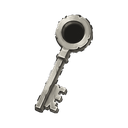
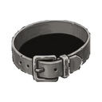
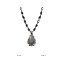
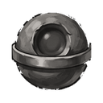
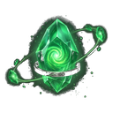

İskelet Mezarlığı D2
ZindanT2Sv 15-20
Giriş anahtarı: 
Yaratıklar
Bir yaratığı yenince gelen EXP ve altın. Aldığın EXP ayrıca seviyene ve bonuslarına bağlıdır; oyundaki yaratık kartı senin miktarını gösterir.
| Yaratık | Seviye | Taban EXP | Altın | Düşenler |
|---|---|---|---|---|
| Huzursuz İskelet | Sv 15 | 14.115 | 22 |  Yükseltme Taşı T1 Yükseltme Taşı T1  Demir Kemer T2 Demir Küpe T2 Demir Küpe T2  Demir Eldiven T2 Demir Eldiven T2  Demir Miğfer T2 Demir Miğfer T2  Demir Kolye T2 Demir Yüzük T2 Demir Yüzük T2 |
| Gölge İfriti | Sv 17 | 14.206 | 26 | Yükseltme Taşı T1 Demir Kemer T2  Demir Çizme T2 Demir Çizme T2  Demir Göğüslük T2 Demir Göğüslük T2  Demir Zindan ÇekirdeğiDemir Küpe T2 Demir Kolye T2 Demir Yüzük T2 |
| Zindan Muhafızı T2 | Sv 20 | 14.386 | 32 | Yükseltme Taşı T1 Demir Kemer T2 Demir Küpe T2 Demir Kolye T2  Demir Pantolon T2 Demir Yüzük T2 Demir Pantolon T2 Demir Yüzük T2 |
| Zindan Lordu T2 Boss | Sv 20 | 49.632 | 110 |  Nadir Öz Demir Kemer T2 Demir Zindan ÇekirdeğiDemir Küpe T2 Demir Kolye T2  Demir Sadağı T2 Demir Yüzük T2 Demir Sadağı T2 Demir Yüzük T2  Demir Kalkan T2 Demir Kalkan T2  Demir Kitabı T2 Demir Kitabı T2  Demir Asa T2 Demir Asa T2  Demir Hançer T2 Demir Hançer T2  Demir Kılıç T2 Demir Kılıç T2  Demir Topuz T2 Demir Topuz T2  Demir Yay T2 Demir Yay T2 |